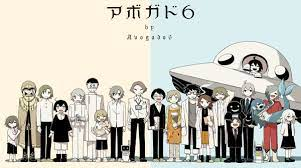
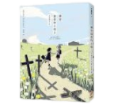

盡頭之後，會得到永遠的平靜嗎？ 赴死之前，讓我們一起繞繞路吧！
滿是空虛之物為什麼我們的日常如此瘋狂、如此脆弱，卻又如此難以放手呢？
滿是溫柔的土地上

真正擁有「心」的， 是人類，還是機器人？
潘柏霖
人工擁抱我不知道我是真的想擁抱你還是只為了被你喜歡。
恐懼先生你櫃子裡的怪物，不會自己離開那裡，你走在路上還是隨時都可能被外星人綁架。
我喜歡我自己我多麼想放棄我的生活／但你說要放棄生活／我要先有生活